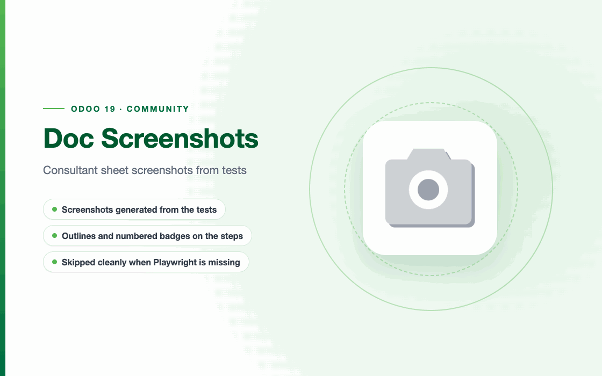

More apps by Terrabit
Other modules from the same publisher, built to work together. All apps →
Consultant sheet screenshots from tests

A development tooling module: it adds no business feature.
It provides the ScreenshotCase mixin (in tests/screenshot_case.py) that generates the
screenshots of the consultant sheets (<module>/static/description/) automatically, from data
seeded deterministically in the tests.
How it works: HttpCase (the Odoo server and the test transaction) plus Playwright (system
Chrome) to navigate and take screenshots with clean names, written straight into
<module>/static/description/. Login through the session cookie.
✨ Main features:
ScreenshotCase — reusable HttpCase base class for any consumer module: the screenshots are
described as a list of dicts and generated with one command.prepare_ro_company — seeds the company with Romanian data (country, RON, VAT, address), gives
the admin accounting rights and switches on the Romanian language and the light theme.prepare_demo_company — the alternative for modules with pre-filled demo data (invoices, etc.).account_move_shot — screenshot of an account.move form with the Journal Items tab open.force_light_theme — forces the light theme on the admin, whatever the database preference._autotrim — trims the uniform margins of the screenshot.highlight per shot — outlines CSS/Playwright selectors in Odoo orange with numbered badges
①②③, to point at the exact steps of the sheet.playwright, the screenshot tests are skipped and the test suite
still passes.It replaces l10n_ro_doc_screenshots (Romania localization suite), which now only re-exports
ScreenshotCase from here, so existing tests keep working.
The module installs as usual. Generating the screenshots needs extra packages in the Odoo Python environment:
pip install playwright websocket-client pillow
playwright install chrome
playwright — drives a headless Chrome to navigate and take the screenshots.websocket-client — talks to the Chrome DevTools Protocol.pillow — trims the margins of the screenshots (_autotrim); optional, without it the
screenshot is saved untrimmed.playwright install chrome downloads the Chrome managed by Playwright.Without playwright, the screenshot tests (--test-tags=fise_screenshots) are skipped instead of
failing.
In a consumer module, tests/test_screenshots.py extends ScreenshotCase, seeds deterministic data
in setUpClass and lists the screenshots in capture_screenshots([...]). The import is defensive,
so the module's tests still load when this tooling module is not on disk:
try:
from odoo.addons.deltatech_doc_screenshots.tests.screenshot_case import ScreenshotCase
except ImportError:
ScreenshotCase = None
Run:
./odoo/odoo-bin -c odoo.conf -d <db> -u <module> \
--test-tags=fise_screenshots --stop-after-init --http-port=<free> --gevent-port=<free>
Screenshots are generated only on request. Unlike a normal test, they write to the working
tree (they rewrite the .png files of the module), so a test run that did not ask for them skips
them. They count as requested when:
--test-tags contains the class's own tag (fise_screenshots, or any tag ending in
_screenshots), as in the command above;--test-tags names the class, e.g. --test-tags=/<module>:TestXScreenshots;FISE_SCREENSHOTS=1 is set in the environment.SKIP_FISE_SCREENSHOTS=1 is a veto over any request.
Two languages. The consultant sheet (readme/FISA_CONSULTANT.md) uses Romanian screenshots;
readme/USAGE.md, published on the Apps Store, uses English ones. Build the shot list once and
capture it per language:
def _shots(self):
return [{"url": ..., "name": "01_list.png", "highlight": "button[name='action_post']"}]
def test_capture_fise(self): # ro_RO -> static/description/ (or readme/screenshots/)
self.capture_screenshots(self._shots())
def test_capture_usage(self): # en_US -> static/description/en/
self.capture_screenshots(self._shots(), lang="en_US")
Prefer selectors by name; when a selector needs UI text, give it per language:
{"ro_RO": "button:has-text('Confirmă')", "en_US": "button:has-text('Confirm')"}.
To capture a single language, name the method:
--test-tags=/<module>:TestXScreenshots.test_capture_usage.
Framing: capture_screenshots(..., viewport=(1920, 950)) by default, wide enough for
account.report tables with many columns; force_light_theme() is called by
prepare_ro_company / prepare_demo_company; _autotrim trims the margins. Useful per-shot
options: full, wait, click_btn, click_tab, unfold_report, eval (custom JS), settle
(pause in ms).
Animated demo (GIF). capture_gif(steps, name="demo.gif") records a flow as an animated GIF
for the Apps Store page: a simulated cursor glides to each target and shows a ring on click, text
is typed letter by letter and captions run at the bottom like film subtitles. The GIF opens with a slide
built from static/description/banner.json and the module icon, fades into the flow and returns
to the slide at the end. Each step is a dict; its keys run in this order:
def test_capture_gif(self):
self.capture_gif([
{"goto": f"action={action.id}&model=res.partner&view_type=form"},
{"caption": "A new partner starts with the name"}, # stays until the next one
{"type": "Ferma Verde SRL", "into": "name"}, # a field name or any selector
{"caption": "Once saved, the partner is ready"},
{"click": ".o_form_button_save", "wait_after": ".o_form_saved", "hold": 2000},
], name="demo.gif")
Other keys: path, wait, eval, move (cursor only), press (Enter, Tab...), clear,
hide_cursor, hold (ms). Values may depend on the language, as in capture_screenshots;
intro={"title": ..., "summary": ..., "features": [...]} overrides the slide (e.g. Romanian texts
when banner.json is in English) and intro=False drops it. The GIF is 1120×700 by default
(viewport); scale=0.75 makes a smaller file. Time in the GIF is virtual, so the pace does not
depend on how fast the server answers, and identical frames are merged. When a step fails, the
error names the step and saves the screen to a temporary .error.png.
Keep static/description/en/demo.gif (and demo.gif for the Romanian page): tb-gen-index
shows it automatically first in the Overview tab of the Apps Store page, so do not reference it from
readme/*.md as well, or it appears twice.
capture_gif: the captions are film-style subtitles (white text centred at the bottom on a
translucent black band that follows the lines), without step numbers; the num key is gone.static/description/ (en/ for English), also for modules that
still keep their PNG screenshots in readme/screenshots/.demo.gif is no longer referenced from readme/USAGE.md: tb-gen-index 1.14.0 shows it first
in the Overview tab of the Apps Store page.capture_gif), where the GIF is written and the checks.capture_gif(steps, name): records a flow as an animated GIF for the Apps Store, with a
simulated cursor (glide and click ring), letter-by-letter typing and numbered captions, opening
and closing on a slide built from banner.json and the module icon. Global 256-colour palette
(octree, so links and buttons keep their colour) and merged identical frames keep the file small.capture_screenshots and capture_gif share the browser start-up (_browser_session).xlsx_to_html / xlsx_shot: numbers are right-aligned and shown with the cell number format
(e.g. #,##0.00 → two decimals, thousands separator); the new lang argument picks the
separators (ro_RO: 1.234,56).capture_screenshots(shots, lang="en_US") sets the user's
language and the browser locale, renders report_shot reports in that language and writes the
files to static/description/en/ with the same names, for readme/USAGE.md on the Apps Store.
Romanian (ro_RO, the default) still goes to the usual folder, for the consultant sheet.{"ro_RO": ..., "en_US": ...} (e.g. a
:has-text(...) selector); click_tab finds the tab by its English or Romanian label.report_shot follows the capture language by default (lang="auto"); an explicit code still
pins it.static/description/) work again with Pillow 9.0.1, the
version Odoo 19 pins on Python 3.10: they failed with "module 'PIL.Image' has no attribute
'Quantize'", a name that exists only since Pillow 9.1.capture_screenshots lifts Odoo's virtual memory limit (limit_memory_hard, RLIMIT_AS) while
Playwright runs: Chrome inherited it and died at launch on Linux ("Target page, context or
browser has been closed", SIGTRAP), as in CI. Odoo's own test browser already does this.l10n_ro_doc_screenshots (Romania localization suite, 19.0.1.1.9), in a public
repository, so every suite and its CI can fetch it without access to a private one. The code is
the same; l10n_ro_doc_screenshots now re-exports ScreenshotCase from this module.Our 600+ apps on the Odoo Apps Store are used in Odoo implementations across Europe, the Americas, Asia and Africa — by companies we have never even met. That is the advantage of building modules that simply work.
Questions about this module, or need it adapted to your processes? Write to us — the developers who build it will answer.
Terrabit support →Other modules from the same publisher, built to work together. All apps →